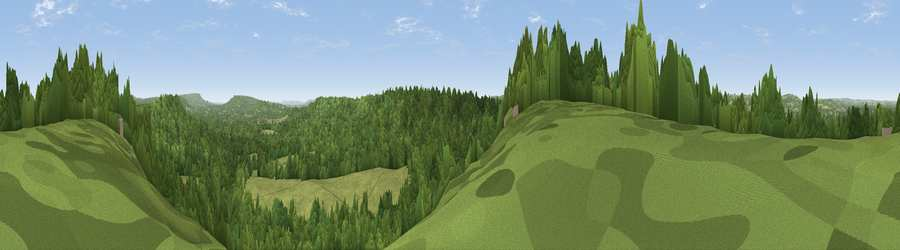

Viewpoint near Hill Brow
#29659 in England · top 45% of its area beats it · near Hill BrowThe view, rendered

A 360° render of this exact spot computed from the terrain model, tree cover and land cover — summer colours, afternoon light, calibrated against photographs of famous viewpoints. Real trees, hedges and buildings will differ in detail.
The panorama
Grey silhouette: terrain skyline in each direction (720 bearings, Earth curvature and refraction included). Dashed green: skyline with trees (+15 m) and buildings (+8 m) as obstacles. Blue strip: how far the ground is visible on each bearing.
Where the view opens
Wedge length = distance to the farthest visible ground on that bearing (vegetation-aware). Rings at 10, 25 and 50 km.
What fills the view
71% woodland · 26% grassland · 2% cropland ·
Angular shares of the visible panorama (visual magnitude), not map area. Landscape diversity 0.31 (0–1 Shannon).
Key numbers
More beautiful places nearby
The staircase of upgrades: each row has a higher view potential than everything closer. Driving times are estimates from straight-line distance, calibrated against real road routing — check an actual route before setting out.
| Place | Direction | Drive | Score |
|---|---|---|---|
| Viewpoint near Milland | ENE · 3 km | ~8 min | 50.6 |
| Viewpoint near Milland | ENE · 4 km | ~10 min | 53.1 |
| Viewpoint near Steep | W · 5 km | ~11 min | 61.9 |
| Viewpoint near Steep | W · 5 km | ~11 min | 68.7 |
| Viewpoint near South Harting | S · 9 km | ~17 min | 72.9 |
| Harting Down | S · 9 km | ~17 min | 76.5 |
| Beacon Hill | S · 9 km | ~17 min | 85.8 |
| Chanctonbury Ring | ESE · 37 km | ~56 min | 87.0 |
51.03620, -0.86790 · source: screening · position refined by local search. Computed location — check access rights before visiting.